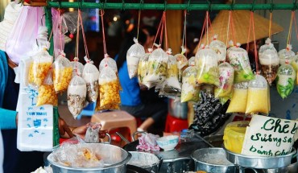

Thành phố Hồ Chí Minh (có tên gọi không chính thức là Sài Gòn) là một trong các thành phố lớn nhất tại Việt Nam. Đây là một trong những trung tâm kinh tế, chính trị, văn hóa và giáo dục của Việt Nam. Thành phố Hồ Chí Minh là thành phố
trực thuộc trung ương thuộc loại đô thị đặc biệt của Việt Nam cùng với thủ đô Hà Nội.[4] Nằm trong vùng chuyển tiếp giữa Đông Nam Bộ và Tây Nam Bộ, thành phố này hiện có 19 quận và 5 huyện, tổng diện tích 2.095,239 km².[5] Theo kết
quả điều tra dân số chính thức vào thời điểm ngày một tháng 4 năm 2009 thì dân số thành phố là 7.162.864 người (chiếm 8,34% dân số Việt Nam), mật độ dân số trung bình 3.419 người/km². Đến năm 2019, dân số thành phố tăng lên 8.993.082
người và cũng là nơi có mật độ dân số cao nhất Việt Nam.[6] Tuy nhiên, nếu tính những người cư trú không đăng ký hộ khẩu thì dân số thực tế của thành phố này năm 2018 là gần 14 triệu người.[7] Thành phố Hồ Chí Minh chiếm 21,3% tổng
sản phẩm (GDP) và 29,38% tổng thu ngân sách của cả Việt Nam.[8][9] Nhờ điều kiện tự nhiên, Thành phố Hồ Chí Minh trở thành một đầu mối giao thông của Việt Nam và Đông Nam Á, bao gồm cả đường bộ, đường sắt, đường thủy và đường không.
Vào năm 2007, thành phố đón khoảng 3 triệu khách du lịch quốc tế tức 70% lượng khách vào Việt Nam. Các lĩnh vực giáo dục, truyền thông, thể thao, giải trí, Thành phố Hồ Chí Minh đều giữ trọng lượng nhất định.

NHỮNG TRẢI NGHIỆM THÚ VỊ TRONG CHƯƠNG TRÌNH Nhắc đến xứ Bắc, không thể bỏ lỡ… – Văn Miếu Quốc Tử Giám: ngôi trường đại học đầu tiên của Việt Nam, không chỉ là di tích lịch sử nổi tiếng của thủ đô Hà Nội mà còn là nơi chứa đựng những giá
trị tinh hoa văn hóa của những giai đoạn lịch sử phong kiến trước kia và lưu giữ những giá trị truyền thống của đất Việt. – Vịnh Hạ Long: Theo CNN, là điểm du lịch đẹp nhất tại Việt Nam, đồng thời là một trong những điểm tham quan
tự nhiên nổi tiếng của Đông Nam Á. Với 1.969 đảo đá vôi cùng những ngôi làng nổi trên làn nước xanh thẳm, vẻ đẹp của Hạ Long như khiến thời gian lắng đọng. – Chiêm ngưỡng vẻ đẹp hùng vĩ của Sapa bằng tuyến tàu hỏa leo núi Mường Hoa,
sau đó sẽ thử chuyến cáp treo Fansipan cao 3143m so với mặt nước biển để đến Nóc nhà Đông Dương. – Bản Tả Van: là nơi sinh sống của người dân tộc Mông và người Dao Đỏ, người Giáy. Thay vì những điểm đến du lịch khác, người dân địa
phương sẽ hòa cùng với hoạt động kinh doanh du lịch, khách du lịch.

Trình bày hình quang cáo 1

Trình bày hình quảng cáo 2

quảng cáo ......